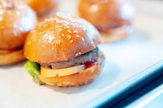

Burger Sliders

Description
These cheesy burger sliders, shared by Minnesota_Girl, have become a crowd favorite for parties, game days, and family gatherings. Made with seasoned ground beef, melty Cheddar, and soft dinner rolls, they bake up warm and gooey in just minutes. Simple to make and always a hit, these sliders taste just like the classic fast-food minis everyone loves — perfect for feeding a hungry crowd!
Ingredients
- Cooking spray
- 2 pounds ground beef
- 1 envelope onion soup mix
- 2 cups shredded cheddar cheese
- 1/2 cup mayonnaise
- 24 dinner rolls, split
- 1/2 cup sliced pickles (Optional)
Steps
- Gather the ingredients
- Preheat the oven to 350 degrees F (175 degrees C). Cover a baking sheet with aluminum foil and grease with cooking spray. Grease a sheet of aluminum foil; set aside.
- Mix ground beef and onion soup mix together in a large skillet; cook and stir over medium-high heat until beef is crumbly and evenly browned, 5 to 7 minutes. Drain and discard any excess grease/
- Remove the skillet from heat; stir in Cheddar cheese and mayonnaise.
- Place roll bottoms on the prepared baking sheet. Spread beef mixture onto each bottom; cover with bread roll tops. Cover sliders with the prepared sheet of aluminum foil.
- Bake in the preheated oven until burger sliders are heated through and cheese is melted, about 30 minutes.
- Serve sliders with sliced pickles and enjoy!
Home